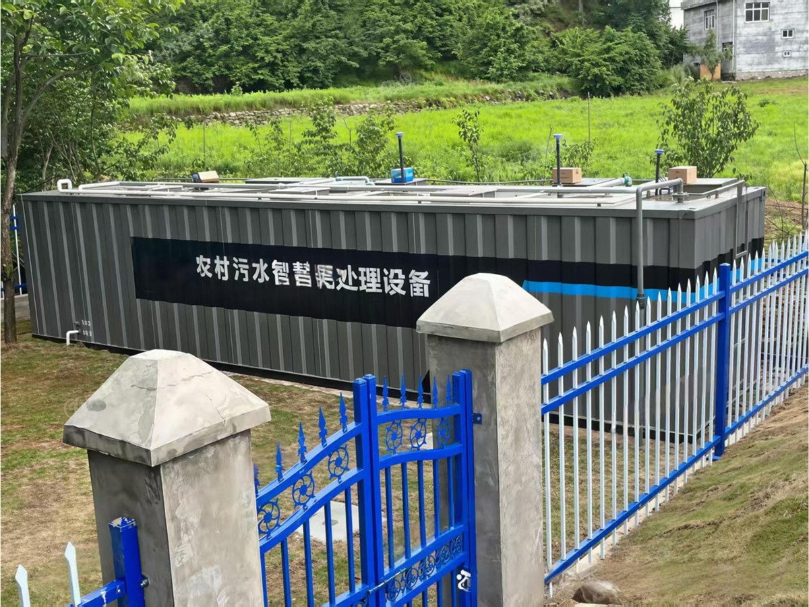

SERVICE AREAS
生活、医院、农村与工业污水处理。
模板预览 · 具体服务介绍与对应配图待确认
污水处理
面向居住社区、园区及公共建筑等生活污水场景，预留水质水量、处理目标和设备配置的介绍位置。
面向医疗机构污水处理场景，预留分类收集、处理消毒及运行管理等内容，具体方案待确认。

面向村镇与分散站点，预留收集方式、处理设施、现场条件和日常维护等内容。
围绕生产废水的来源、变化和处理要求，预留工艺选择、设备配套及新建改造等内容。